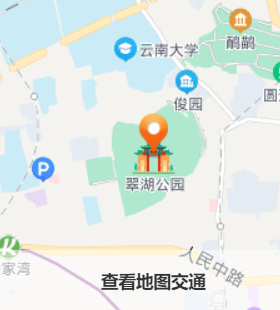
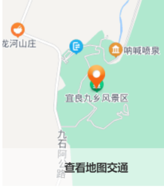

景区介绍
翠湖公园
Green Lake Park
翠湖公园位于昆明市区北部，云南大学对面，是昆明市区环境优美的城市公园，也是很多游客在昆明市内游玩的好去处。这里湖水碧绿，树木、荷塘典雅优美，冬季时还可以喂养、拍摄成千上万的红嘴鸥，趣味十足。
翠湖公园以翠湖为中心，纵贯南北的阮堤和直通东西的唐堤，将翠湖分成五片景区；湖心岛景区以湖心亭和观鱼楼等清代建筑为主。湖心亭又叫“碧漪亭”，飞檐黄瓦造型美观，亭内有前后两个内院，平日里为各种展览举办之地。东南面是水月轩和金鱼岛；东北面是竹林岛、九龙池和知春亭，逢节便有人聚此对唱山歌，别有一番情趣；南边是葫芦岛和九曲桥；西边是海心亭。堤畔垂柳拂面，湖内藕荷飘香，岛上亭台楼阁，将翠湖点缀的秀丽清新。
秋天是赏枫好时节，翠湖公园从十月下旬开始，枫树就会慢慢变红，从金黄相间的枫叶到深红的枫叶也许只是一夜之间。这里的红枫林层层叠叠，与湖水交相辉映，形成唯美的秋日画卷。
每年立冬时分，成千上万只红嘴鸥会从北方飞来在此越冬，这个时候是翠湖公园热闹的时候，市民、游客集中在此，投食喂鸟，与红嘴鸥互动，其乐融融，和谐的场面为翠湖公园增添了无穷乐趣。
九乡
Jiuxiang
云南有句俗话叫“地上看石林，地下看九乡”，九乡与石林同属喀斯特立体景观，但其美不是峰林，而在于溶洞。景区拥有大小溶洞上百座，规模庞大、数量繁多，被誉为“溶洞博物馆”，是昆明周边的必游景点之一。
九乡风景区位于宜良县九乡彝族回族自治乡境内，景区内森林茂密，动植物资源丰富，既有壮丽的山川峡谷，也有瑰丽的地下溶洞，属于典型的喀斯特地貌景观。主要景点包括：荫翠峡、惊魂峡、雄狮厅、雌雄飞瀑、神田等。
进入景区，首先要乘坐落差53米的观光电梯下到谷底的荫翠峡，乘坐游船在最窄仅有丈余的峡谷中穿行，两岸的石钟乳千姿百态，让人目不暇接。穿过峡谷就来到地下溶洞。雄狮厅是一个穹顶倾斜的椭圆形地下厅堂，因南洞口钟乳凝石堆垒如雄狮而得名。雄狮厅高大开阔，总面积有15000多平米，洞顶为一块巨大的岩石，无任何支撑，堪称奇迹。电影《神话》里，成龙和金喜善在陵墓里飞来飞去的那一幕就是在此取景的。大厅中间是一个巨大的展厅，展示一些奇石珍品和民族手工艺品，看看就好。
穿过雄狮厅，是神女宫。洞内密布的钟乳石千姿百态，在五彩灯光的映衬下，缥缈迷离。走过暗河上的叠虹桥，进到卧龙洞。洞中山壁上飞流直下两条巨瀑，高达30米，远看仿佛是一个“人”字，称为雌雄双瀑，是九乡风景区的标志性景观之一。飞溅的瀑布使得脚下的山路湿滑难行，需要注意安全。
到这里去

